Clustering
Overview
Clustering is an unsupervised method. It puts similar things into groups without being told what the groups should be. Nobody hands it a "hit" or "flop" label. It only sees numbers, so any pattern it finds comes straight from the data. That is what makes it useful for discovery. It can turn up families of movies that I never defined myself.
There are two main types of clustering:
- Partitional clustering, like KMeans, cuts the data into exactly k groups that don't overlap. KMeans drops k centroids into the data and assigns every point to the closest one. It then moves each centroid to the middle of its points and repeats until nothing changes. It's fast and handles big datasets well. The downside is that you have to pick k yourself, and it likes round clusters of similar size.
- Hierarchical clustering builds a tree of groups inside groups. I used the agglomerative version, which works from the bottom up. Every movie starts as its own cluster, and the two closest clusters keep getting merged until only one is left. You can draw the whole merge history as a dendrogram. Cutting the tree at a certain height gives you clusters, so you don't have to choose k up front. You also get to see how the groups are related to each other.
Both methods need a distance metric to decide what "similar" means. Here are the ones that matter for this project:
- Euclidean distance is the straight line distance between two points. You take the differences on every feature, square them, add them up and take the square root. KMeans tries to keep points close to their centroid in this sense, so I used Euclidean distance for KMeans.
-
Cosine similarity,
cos(a,b) = a·b / (‖a‖ ‖b‖), looks at the angle between two vectors and ignores how long they are. Cosine distance is just one minus the cosine similarity. I used it for the hierarchical clustering. On standardized data, two movies come out as cosine similar when they are above or below average on the same features in the same proportions. One movie can be way more extreme than the other and still count as similar, as long as the overall shape matches. - Other common choices are Manhattan distance, which adds up the absolute differences, and Minkowski distance, a general formula that covers both Euclidean and Manhattan.
How I'm using clustering here. I describe each movie by six numbers: budget, revenue, popularity, vote count, average rating and runtime. Then I check whether movies fall into natural "success profiles". For example, do big budget crowd pleasers, cheap films that critics love and expensive flops show up as their own groups? Do those groups line up with things like franchises, prestige dramas or indie genre films? The algorithms never see genre or title. I only bring those back at the end to make sense of each cluster.
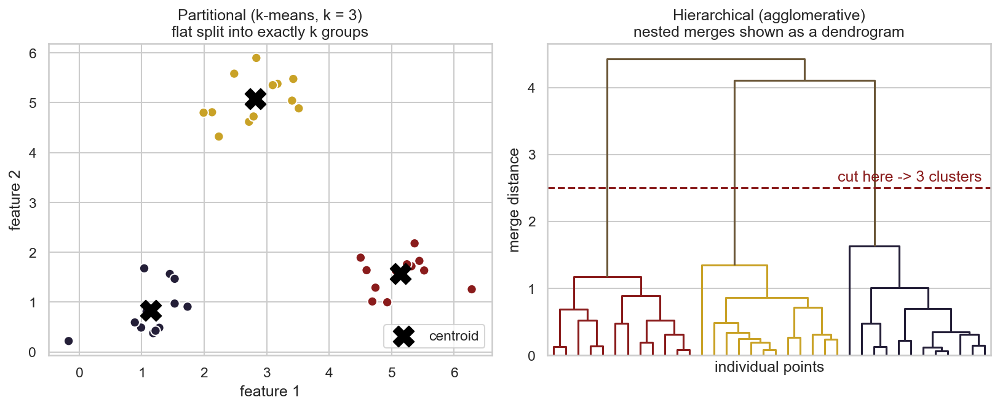
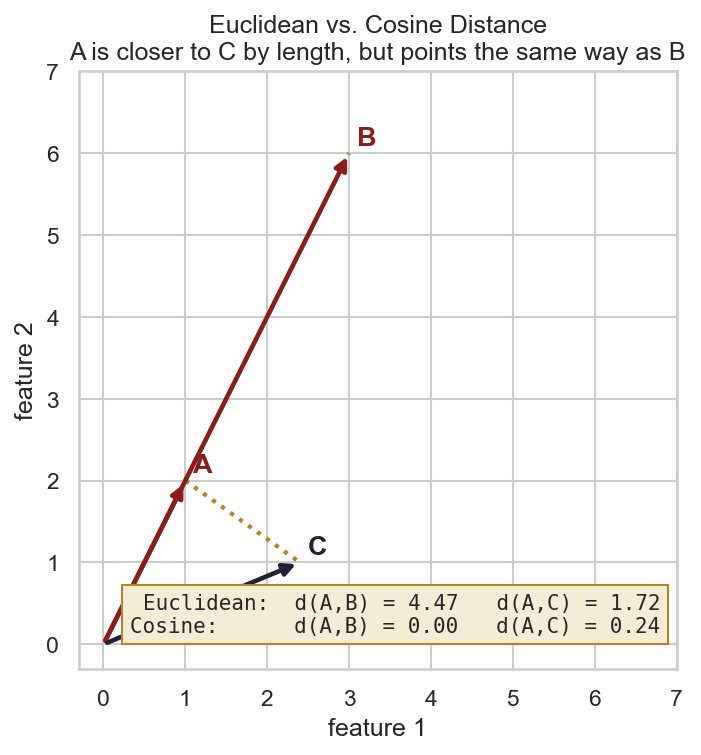
Data Prep
Clustering only works on numeric data with no labels. Distances like Euclidean and cosine are pure arithmetic on feature values, and you can't do arithmetic on a title or a genre. Labels such as rating tier also have to go. The whole idea of unsupervised learning is to see what shows up without being given the answer. I kept the labels to the side and only used them afterwards to explain the clusters.
I started from the cleaned TMDB dataset of 2,000 movies and did the following:
- Picked the features. I kept six numeric "success" columns:
budget,revenue,popularity,vote_count,vote_averageandruntime. - Dealt with missing values. 215 movies had no budget or revenue, and you can't measure distance with blanks. Dropping them left 1,785 movies.
- Log transform. Budget, revenue, popularity and vote count are heavily skewed. A few blockbusters are 100 times the median. I applied
log(1 + x)so those few films don't dominate every distance. - Standardized. I turned every column into a z score with mean 0 and standard deviation 1. Otherwise budget, which runs into hundreds of millions, would drown out a rating that only goes from 0 to 10. This step also centers the data. That's what makes cosine similarity meaningful here, since it ends up comparing each movie's pattern of above and below average values.
- Removed labels. Title, genre and rating tier are not part of the clustering input.
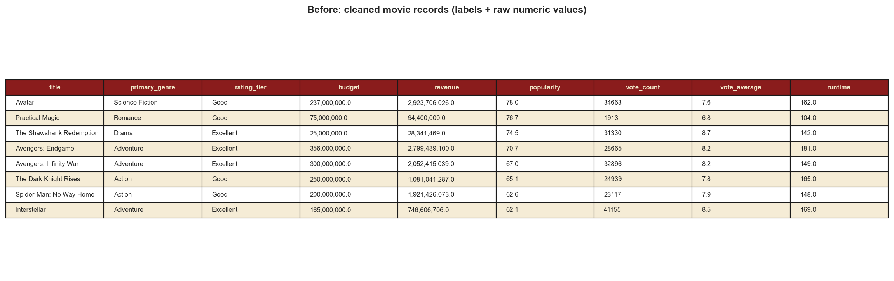
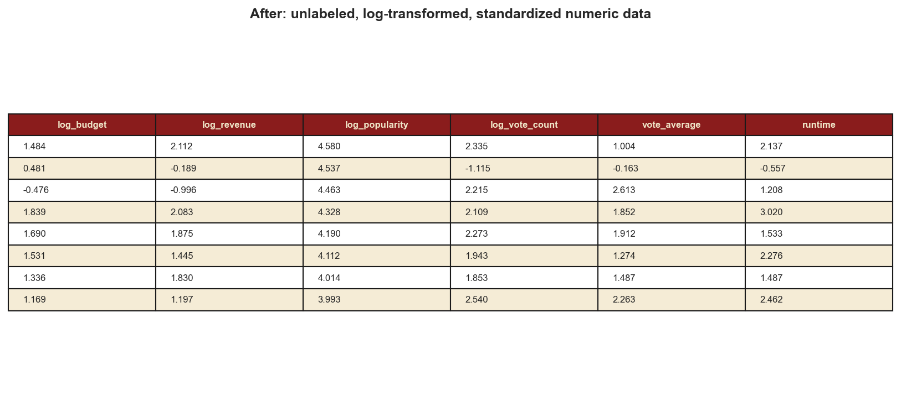
Code
Everything is written in Python. I used pandas, sklearn for
KMeans, silhouette_score, adjusted_rand_score and
StandardScaler, scipy for linkage, dendrogram,
fcluster and pdist, and matplotlib with
seaborn for the charts. One script preps the data, runs both kinds of
clustering and saves every figure on this page.
The main parts of each method:
# KMeans (Euclidean) for k = 2..10, scored with the silhouette method
for k in range(2, 11):
km = KMeans(n_clusters=k, n_init=20, random_state=42).fit(X)
wcss.append(km.inertia_)
sils.append(silhouette_score(X, km.labels_))
# hierarchical clustering with COSINE distance (one minus cosine similarity)
dist = pdist(X.values, metric="cosine")
Z = linkage(dist, method="average") # agglomerative, average linkage
labels = fcluster(Z, t=k, criterion="maxclust")
dendrogram(Z, truncate_mode="lastp", p=40)For the hierarchical clustering I went with average linkage. Ward linkage is a popular choice, but it only works with Euclidean distance. Average linkage works with any distance, cosine included.
Results
1. Picking k for KMeans with the elbow and silhouette methods
I ran KMeans for every k from 2 to 10. The elbow plot, which tracks the within cluster sum of squares, drops smoothly. There's no sharp elbow, just a soft bend around k = 3 or 4. That was my first hint that the movies form more of a continuous spread than separate islands.
The silhouette score compares how close each movie is to its own cluster with how close it is to the next nearest one. It runs from negative 1 to 1, and higher is better. It peaks at k = 2 with 0.249 and then keeps dropping: 0.213 at k = 3, 0.196 at k = 4 and 0.179 at k = 5. So by the silhouette method, the best k is 2. All the scores are under 0.25 though, which means the clusters are real but they overlap quite a bit.
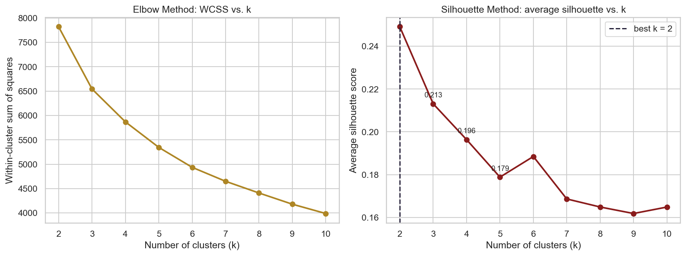
2. Comparing k = 3, 4 and 5
To see what extra clusters actually add, I compared KMeans at k = 3, 4 and 5. The panels below squash the six features down to two principal components just so they can be plotted. The clustering itself used all six. The k = 4 version was the easiest to make sense of, so here are its median values per cluster:
| k = 4 cluster | Movies | Median budget | Median revenue | Median rating | Runtime | Typical members |
|---|---|---|---|---|---|---|
| 0: Small indie and cult | 274 | $10M | $19M | 6.9 | 104 min | Reservoir Dogs, Donnie Darko, Requiem for a Dream, The Purge |
| 1: Blockbuster hits | 358 | $140M | $527M | 7.4 | 129 min | Interstellar, Inception, The Avengers, The Dark Knight, Avatar |
| 2: Mainstream with weaker reviews | 687 | $65M | $170M | 6.4 | 107 min | Lucy, Oblivion, The Hangover Part II, Night at the Museum |
| 3: Mid budget and well reviewed | 466 | $34.5M | $125M | 7.4 | 122 min | John Wick, Get Out, Whiplash, Baby Driver, Memento |
With k = 3 I got three groups. There were blockbusters (550 movies, $94M median budget, $384M revenue, 7.4 rating), mainstream films that rated lower (780 movies, 6.4 rating), and cheaper dramas that rated higher (455 movies, $15M budget, 7.2 rating).
Moving to k = 4 breaks that cheap group in two: real micro budget indies on one side and well reviewed mid budget films on the other. At k = 5 the blockbusters split as well. One part is the mega hits (244 movies, $544M median revenue, 7.6 rating). The other is films that were expensive but just okay (431 movies, $110M budget, 6.6 rating).
Every step adds a split that makes sense, but the silhouette score still goes down each time. The new boundaries are cutting through crowded areas instead of real gaps.
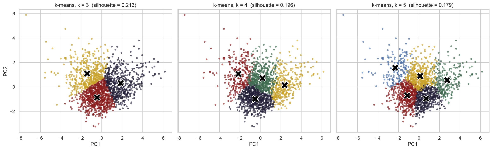
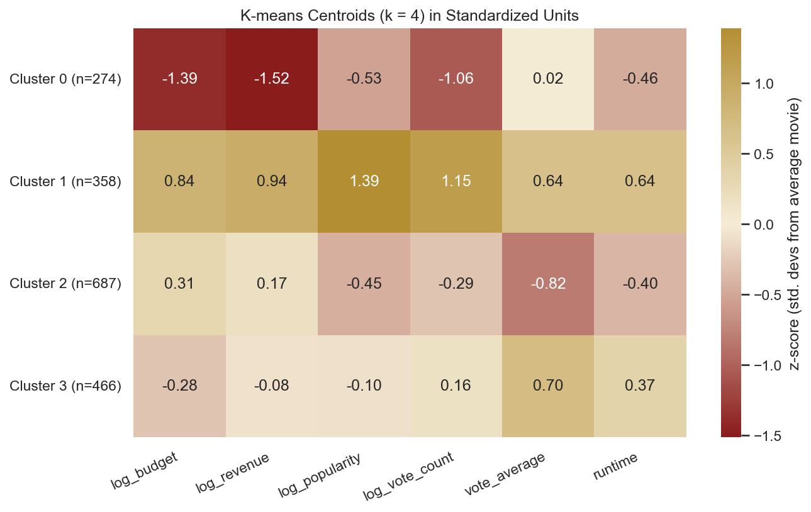
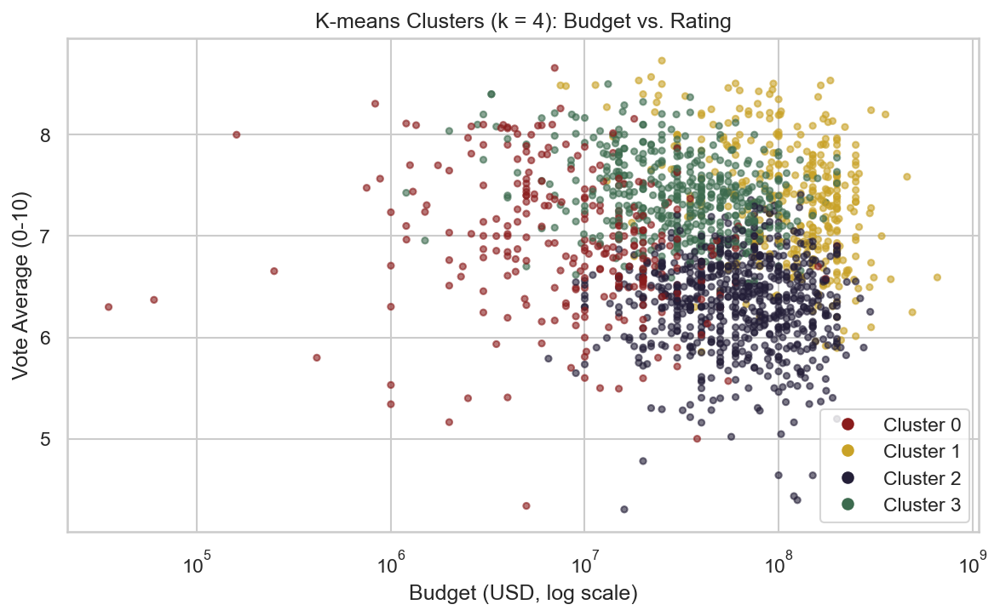
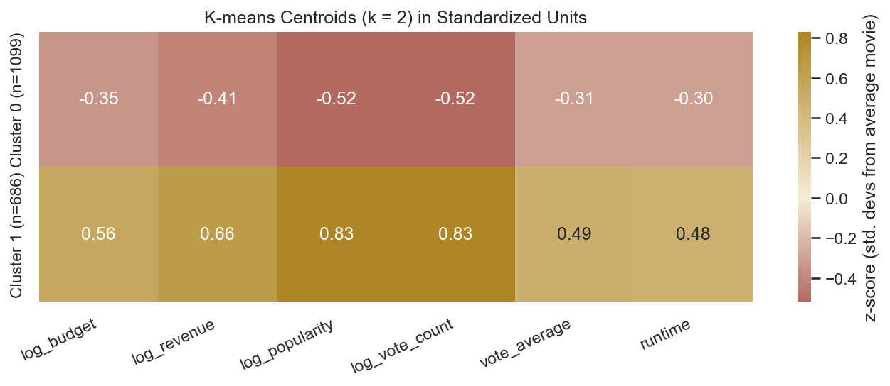
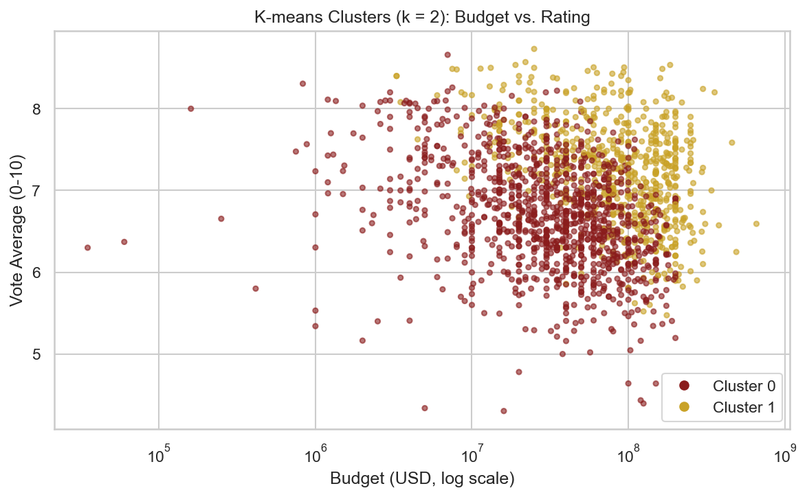
3. Hierarchical clustering with cosine similarity
I ran agglomerative clustering with cosine distance and average linkage on the same 1,785 movies. The full dendrogram below only shows the top 40 branches, otherwise it's impossible to read.
The very last merge happens at a cosine distance of about 1.21. It joins two big branches that each came together much lower, at roughly 0.97 and 1.06. So the most natural place to cut the tree is into two branches. I double checked this by cutting the tree at every k from 2 to 10 and computing the cosine silhouette each time. Hierarchical clustering also points to k = 2 (silhouette 0.325), with k = 3 next (0.284). Cutting at k = 4 doesn't create a meaningful new group. It just splits off 28 films, mostly family and animation titles like Ponyo, Paddington and Wonka.
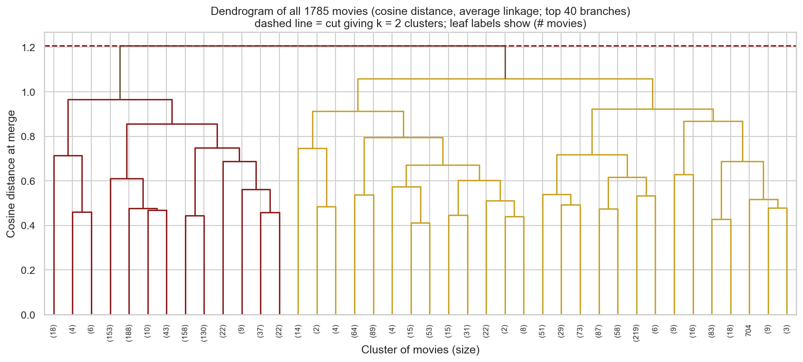
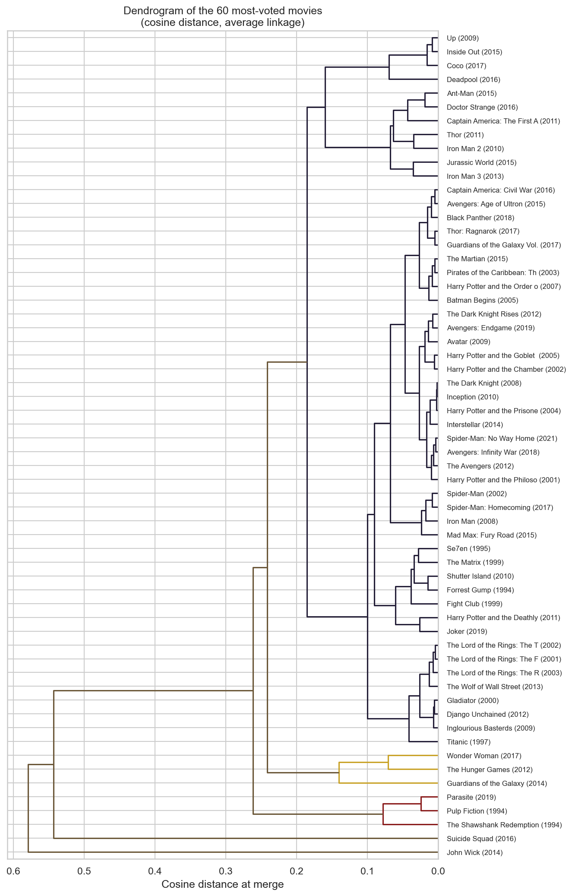
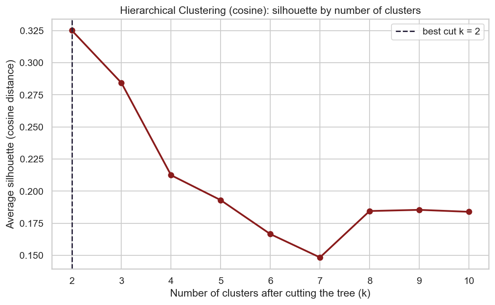
4. How hierarchical clustering compares to KMeans
Both methods agree that k = 2 gives the cleanest split, and both divide the movies by how commercially big they are. The hierarchical "big" branch has 985 movies with a median $75M budget, $256M revenue, 7.2 rating and 124 minute runtime. That lines up well with the KMeans "big" cluster: 686 movies, $98.5M, $362M, 7.3 rating and 125 minutes.
The cross table shows a lot of overlap. 788 movies land in the "smaller" group under both methods, and 674 land in the "big" group under both. Almost all the disagreement goes one way. There are 311 movies that KMeans calls "smaller" but cosine puts with the big films. That happens because cosine only cares about the shape of a profile. A film with a decent budget, a long runtime and good ratings points the same direction as a blockbuster, even if it's less extreme.
The adjusted Rand index measures how much two clusterings agree, where 1 is identical and 0 is no better than chance. It comes out to 0.41 at k = 2 and 0.23 at k = 4. The two methods agree on the main divide but draw the finer lines differently.
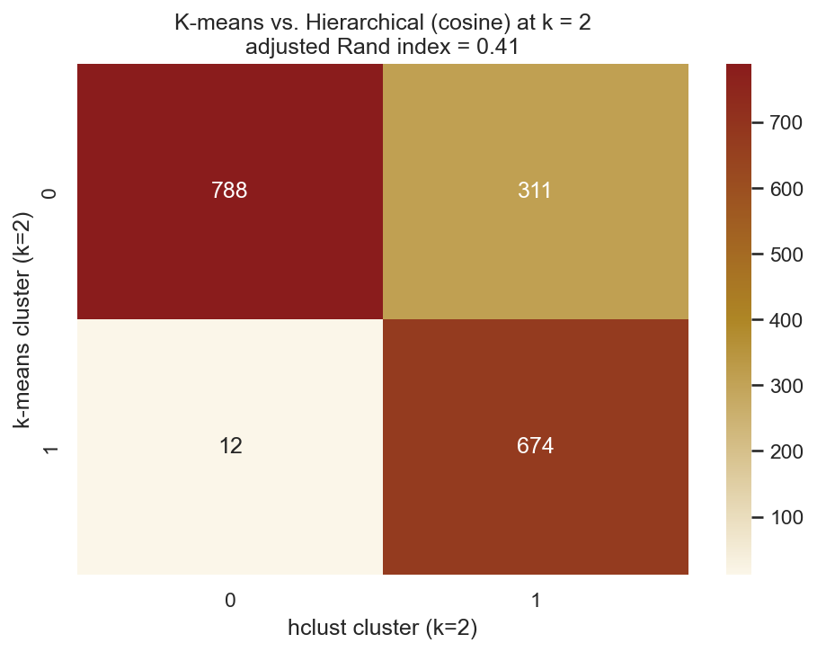
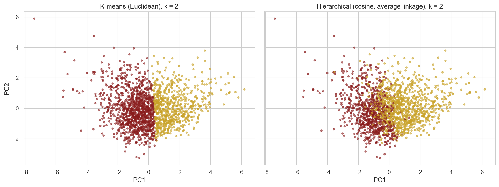
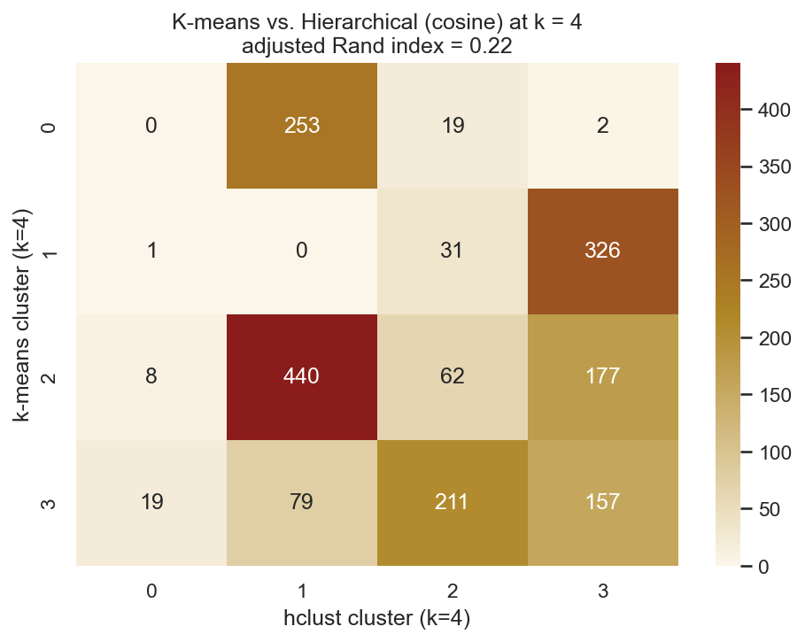
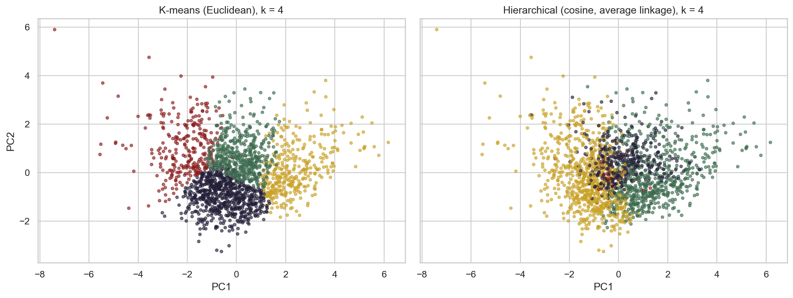
Conclusions
When I grouped movies using only their numbers, with no genre or title, the clearest line was scale. On one side are the big budget, high revenue films that everyone watches. On the other is a bigger group with everything else. KMeans with Euclidean distance and hierarchical clustering with cosine similarity work very differently, yet both picked this two way split as the best one. That gives me a lot more confidence in it.
With more clusters, a more interesting picture of movie success shows up:
- Money buys attention, not good reviews. At k = 4, one cluster of 687 movies gets the budget and marketing of a mainstream hit (median $65M), but it has the lowest ratings of any group at 6.4. Another cluster of 466 movies spends about half as much and gets some of the best ratings, at 7.4. Spending is a good predictor of revenue and popularity. It is not a good predictor of quality.
- The real winners get both. The blockbuster cluster, with films like Inception, The Dark Knight and Avengers, is high on every measure at once. These movies are long, expensive and well reviewed.
- Small films can win on reviews alone. The micro budget cluster, with Reservoir Dogs and Donnie Darko, doesn't earn much but still rates around average (6.9). The labeled dendrogram even gives cheap classics like Parasite and Pulp Fiction their own acclaimed branch.
- Franchises stick together. Marvel, Harry Potter and Lord of the Rings films merge at very small cosine distances. Inside a franchise, the success profile barely changes from one film to the next.
- Success is a spectrum. No method and no k got a silhouette above 0.33. Movies don't fall into sharply separate types. They spread out smoothly, and the clusters are handy summaries of different regions rather than strict categories.
If I were a studio or building a recommender, I would treat commercial size and critical reception as two separate things. The PCA tab looks at those two dimensions directly.